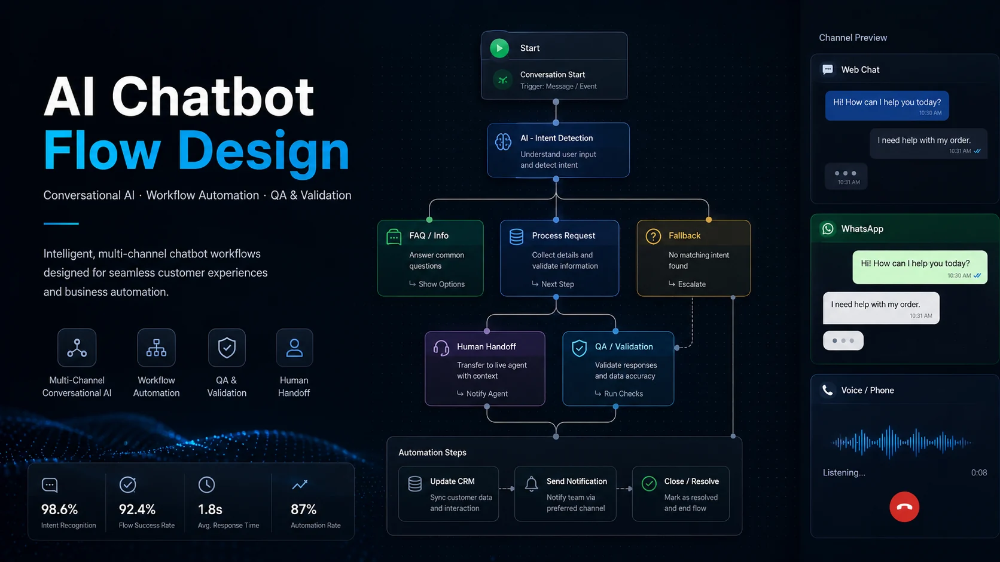
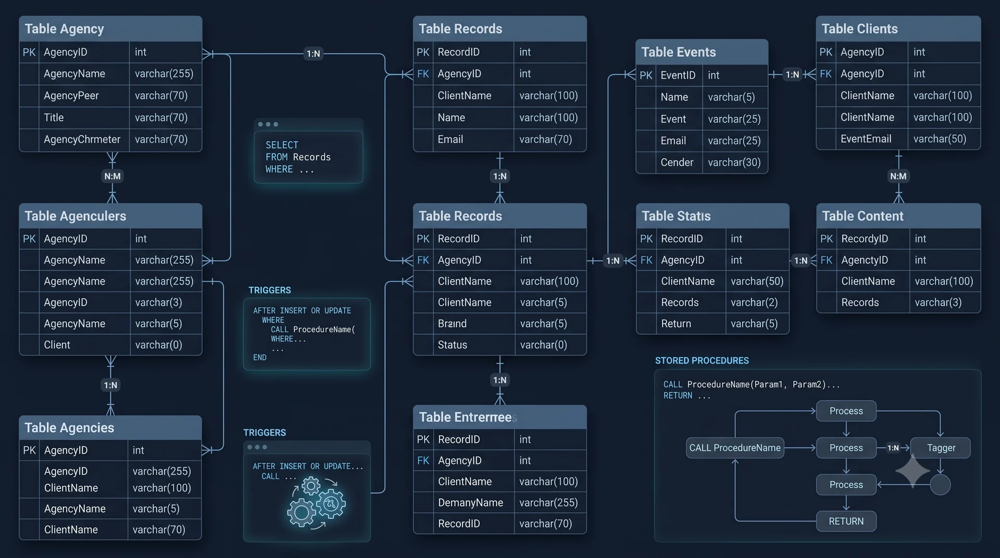
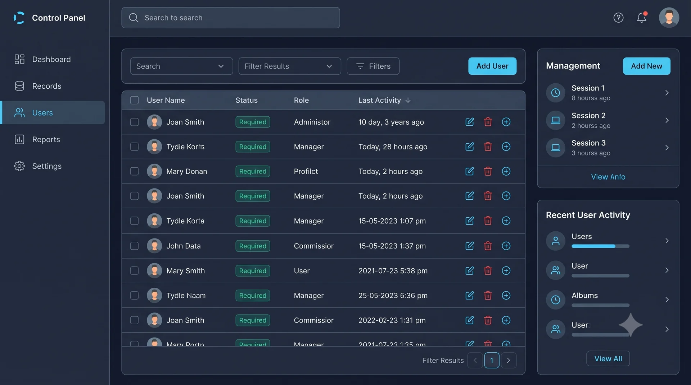
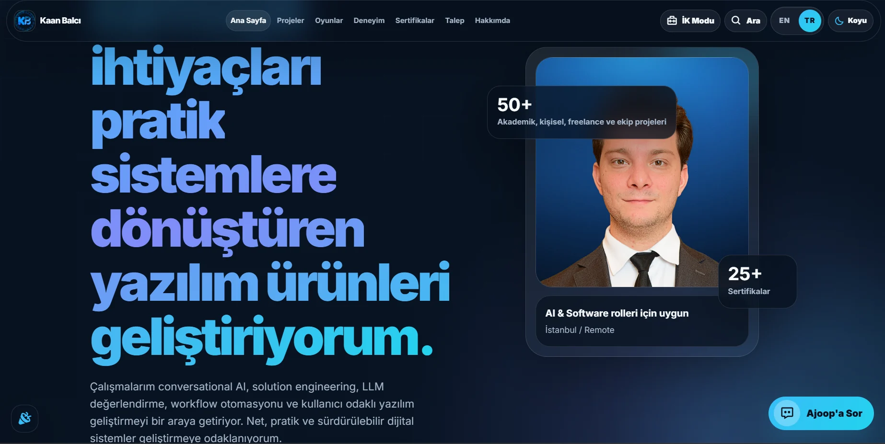
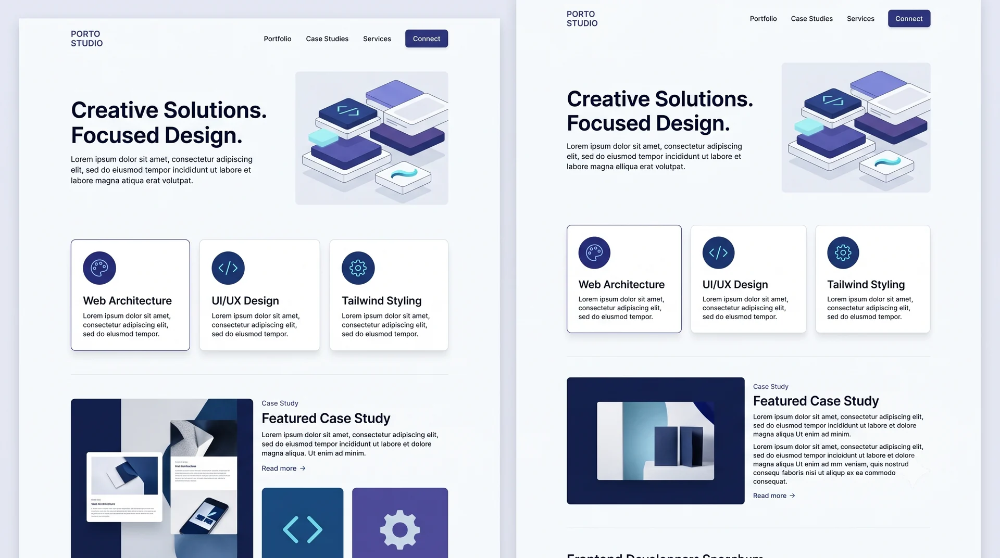
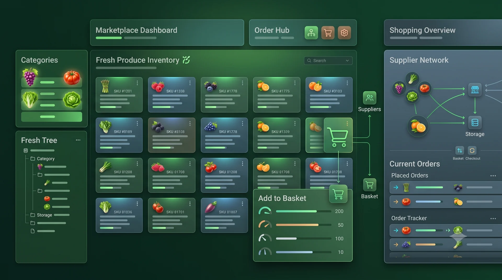

AI Chatbot Flow Design
A case study based on enterprise conversational AI work involving chatbot QA, stabilization, large-scale flow restructuring, channel configuration and multi-channel automation logic.
View Details Kaan Balcı
Open for work
Kaan Balcı
Open for work
Selected Work
A focused selection of projects that demonstrate my work in conversational AI, workflow automation, software development, digital products and interactive systems.
Selected Projects

A case study based on enterprise conversational AI work involving chatbot QA, stabilization, large-scale flow restructuring, channel configuration and multi-channel automation logic.
View Details
A live n8n-inspired browser experience demonstrating chatbot flow structure, node validation, fallback paths and user journey thinking.

A live digital product for a creative workshop studio combining service presentation, package-based reservation journeys, automated notifications and operational workflows.

A database-backed C# Windows Forms project demonstrating patient, doctor, secretary and appointment workflows.

A Python and Tkinter hospital appointment application with patient, doctor and staff workflows, appointment-slot logic and MySQL-backed data operations.
View Details
A Python data project combining exploratory analysis and visualization with a small linear-regression experiment for car-price estimation.
View Details
A first-person environmental puzzle prototype featuring object manipulation, pressure plates, physics-based interactions and modular level design.
View Details
An Android content-sharing application built with Kotlin and Firebase around mobile user flows and database-backed interactions.
View DetailsAdditional Projects

A hyper-casual 3D mobile driving prototype focused on obstacle avoidance, score and reflex-based gameplay.

A relational database project covering normalized agency records, data modeling, stored procedures and triggers.

A PHP and MySQL based administration dashboard with database-backed management screens and operational control flows.

A third-person action shooter prototype with enemy behavior, health management and combat-focused gameplay systems.

A solo third-person platforming and escape prototype built with Unreal Engine 5, C++ and Blueprints.

The live personal portfolio repository combining project catalog, AI assistant, recruiter mode, request form and interactive mini game features.

A third-person tank combat prototype built with Unreal Engine, C++, Blueprints and physics-based gameplay.
Project Archive & Learning Builds


A mobile calculator exercise focused on interface structure and app logic.
View Details



.png)


More code
This page now includes the main public GitHub repositories, selected case studies, learning projects and archived builds in one catalog.